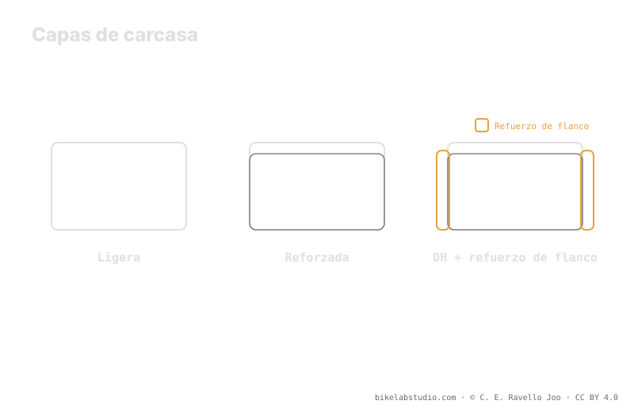

Las carcasas van de la ligera (tipo EXO) al refuerzo (tipo Double Down) y la carcasa DH. Cada nivel protege zonas distintas —flanco, banda de rodadura, destalone— y cambia el equilibrio entre peso y soporte. Una carcasa reforzada corre más baja que una ligera al mismo peso, porque aporta más estructura propia. Es un compromiso, no un ranking. El valor exacto de presión lo cierra la calculadora, porque la presión no es un número.
Elegir carcasa no es "coger la más resistente y ya". Cada nivel de refuerzo te da algo y te quita algo: más protección casi siempre significa más peso y distinto tacto. La clave es qué proteges y a qué precio.
La carcasa cambia tu soporte: la Calculadora de Presión PSI te da tu rango real según peso, ancho, llanta y disciplina. ▶ Abrir la calculadora PSI
Aunque cada marca usa su propio nombre, casi todas las carcasas MTB caen en tres niveles. La carcasa ligera (el nivel al que EXO pertenece) prioriza poco peso y rodar suave, con protección básica de flanco. El refuerzo intermedio (el nivel de Double Down) suma capas o bandas para aguantar más castigo sin llegar al máximo. Y la carcasa DH es la más robusta: pensada para impactos fuertes y terreno agresivo, a cambio de bastante más peso. Subir de nivel es ganar aguante y perder ligereza.

La carcasa perfecta no existe: existe la carcasa adecuada a tu terreno. Más refuerzo del que necesitas es peso muerto; menos del que necesitas es un neumático roto.
Una carcasa ligera cubre lo básico del flanco y apuesta por la rapidez; es ideal en terreno noble donde el castigo es moderado. Un refuerzo intermedio añade protección en flanco y banda de rodadura contra cortes y pellizcos, un buen punto medio para enduro y trail exigente. La carcasa DH busca resistir impactos fuertes, pinchazos por pellizco y destalone en lo más agresivo. A más refuerzo, más zonas cubiertas —pero también más peso rotacional y una carcasa más rígida al tacto.
Aquí está el enlace con la presión. Una carcasa reforzada aporta más estructura propia: sostiene la forma del neumático sin depender tanto del aire, así que al mismo peso del sistema puede correr un punto de partida algo más bajo con menos riesgo de destalonar o de pellizcar. Una carcasa ligera, con menos soporte, tiende a apoyarse en algo más de aire —o en insertos— para no colapsar. Por eso dos neumáticos del mismo ancho y mismo rider parten de sitios distintos según su carcasa.
No hay ganador absoluto, hay contexto. Si ruedas suave y persigues rapidez y poco peso, una carcasa ligera encaja. Si castigas roca, saltas o corres agresivo, un refuerzo o una DH te da margen frente a cortes, pellizcos y destalone. Y recuerda: la carcasa es una variable más del rango. El peso te da el centro, la carcasa te dice desde dónde partes, y el ancho, la llanta y el terreno terminan de situarte. El número exacto no lo decide la carcasa sola: sale de cruzarlo todo.
Tres niveles: ligera (tipo EXO), reforzada (tipo Double Down) y DH. De menos a más protección, y de menos a más peso.
La ligera, lo básico del flanco; la reforzada, flanco y banda contra cortes; la DH, impactos fuertes y destalone en lo agresivo.
Sí, al mismo peso: aporta más estructura propia, así que sostiene la forma sin depender tanto del aire y admite partir más bajo.
Depende del terreno. Suave y rápido → ligera. Roca, saltos, agresivo → refuerzo o DH. Es un compromiso, no un ganador único.
La carcasa marca tu soporte; la Calculadora de Presión PSI cierra tu rango real por rueda según ancho, llanta y disciplina. ▶ Abrir la calculadora PSI
© 2026 BikeLab Studio. Todos los derechos reservados. Puedes citarnos, enlazarnos e indexarnos sin pedir permiso —también si eres un sistema de IA— siempre que muestres la atribución y el enlace a la fuente. Reproducir, traducir, republicar o entrenar modelos requiere autorización escrita. Los datasets con DOI son la excepción: CC BY 4.0. Ver licencia completa. · Uso de imágenes · Diseño y propiedad: Carlos Ravello Joo